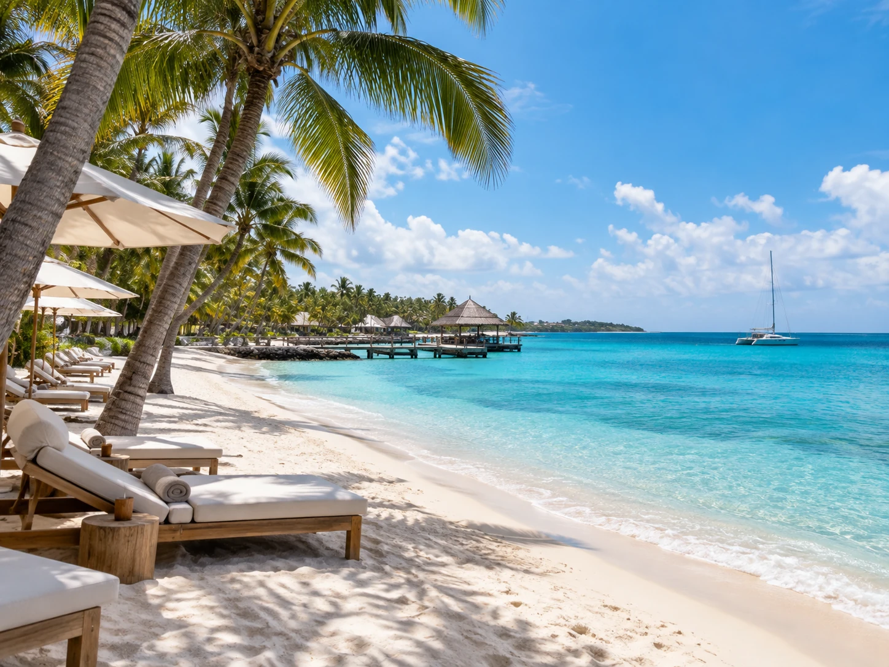
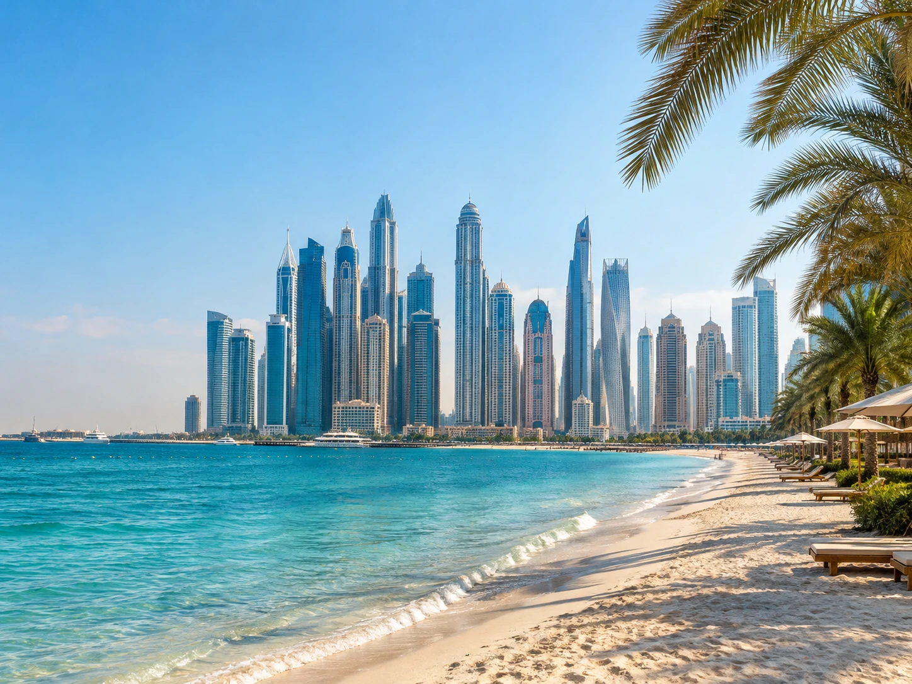

Aruba and Curacao are strong for beach weather
These southern Caribbean islands are popular when travelers want sunshine, beaches, and a lower chance of tropical storms than many other Caribbean destinations. Aruba is especially easy for a resort centered trip, while Curacao has a colorful city feel and more of a explore by car vibe.
Both work well for a warm weather break when you want the trip to feel simple and sunny.
Jamaica gives you more than a resort
Jamaica can be a good November option if you want beaches plus food, music, waterfalls, and excursions. Negril leans into long beach days and sunsets, Montego Bay is convenient, and Ocho Rios is a good base for activities.
If you choose Jamaica, decide whether you want an all inclusive stay or a trip where you leave the property often. That decision changes which area makes the most sense.

Oahu works when you want beach and city together
Honolulu and Waikiki make it easy to mix beach mornings with restaurants, shopping, nightlife, and cultural experiences. You can also rent a car for a day and explore more of the island.
It is a good fit for travelers who get bored sitting at a resort for an entire week.
Mexico and Cabo can be simple from the West Coast
The Riviera Maya works well if you want Caribbean water, resorts, cenotes, and day trips. Cabo offers desert scenery, dramatic ocean views, resorts, and a shorter travel day from many western cities.
Mexico is especially useful when you want an international feeling without a very long flight.
Dubai is the bigger swing
If you want something that feels more dramatic, Dubai is warm in November and gives you beaches, restaurants, shopping, desert experiences, and major hotels in one trip.
It is farther and usually more expensive than a Caribbean getaway, but it can make sense when the goal is not just warmth, it is a full destination experience.